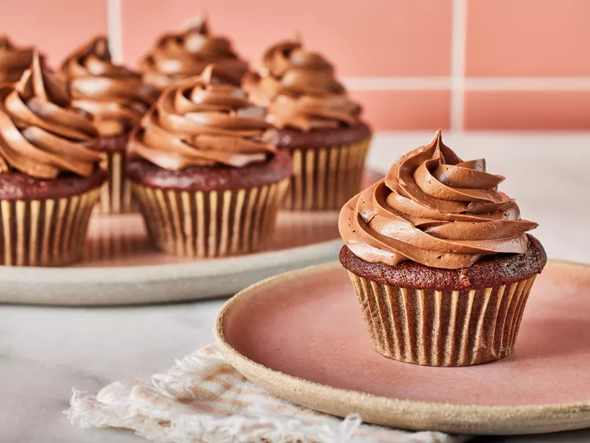

Cupcake

Description
This chocolate cupcake recipe makes rich, moist, and tender cupcakes from scratch with cocoa powder and easy baking ingredients. Frost with chocolate buttercream for the ultimate chocolaty treat! Perfect for birthdays and holiday parties.
Ingredients
-
Cocoa Powder
-
Flour
-
Sugar
-
Butter
-
Vanilla
-
Eggs
-
Milk
-
Leavening Agents
-
Salt
Steps
-
Step1:Preheat the oven to 350 degrees F (175 degrees C). Line a muffin pan with paper or foil liners.
-
Step2:Spoon flour into a measuring cup and level off with a knife. Sift flour, cocoa, baking powder, baking soda, and salt into a large bowl.
-
Step3:Beat sugar and butter together in a separate large bowl with an electric mixer until light and fluffy.
-
Step4:Add eggs, one at a time, beating well after each addition. Stir in the vanilla. Add flour mixture in two batches, alternating with milk; mix only until no streaks of flour remain.
-
Step5:Spoon batter into the prepared muffin cups, filling each 1/2 full.
-
Step6:Bake in the preheated oven until a toothpick inserted into the centers comes out clean, 15 to 17 minutes. Remove from the oven and let cool in the pan for a few minutes before transferring to a wire rack to cool completely before serving or frosting.
Home